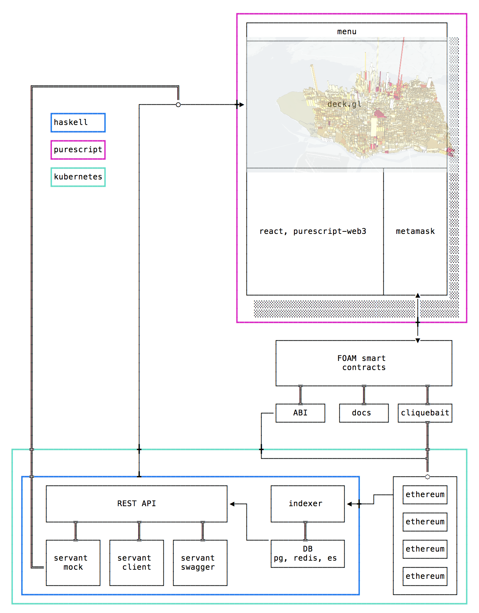

The FOAM architecture consists of three major parts:
The guiding principles are
DRY (“don’t repeat yourself”)The diagram below outlines the different parts, and also the direction in which parts communicate with eachother. Communication here really means everything from API calls and websockets to compile-time information flow.
